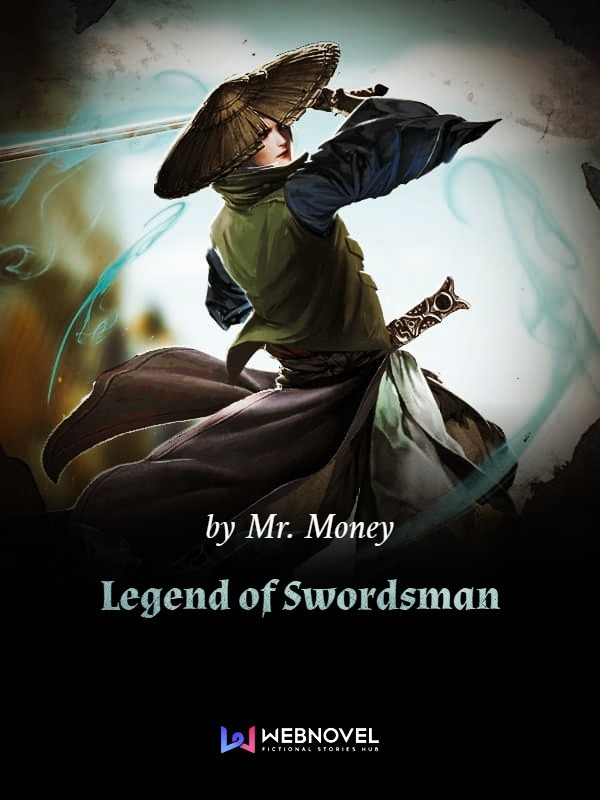

Adventure Action Xuanhuan Martial Arts
Legend of Swordsman
Synopsis:
Jian Wushuang was reborn in adversity. In order to get his revenge, he began to cultivate Heavenly Creation Skill. With the help of the Heaven defying cultivation method, Jian Wushuang gradually grew into a peerless genius from an ordinary practitioner. With a sword in hand, no one is his match. Using his extraordinary Sword Principle, he killed all his opponents and eventually became number one Sword Master from time immemorial.